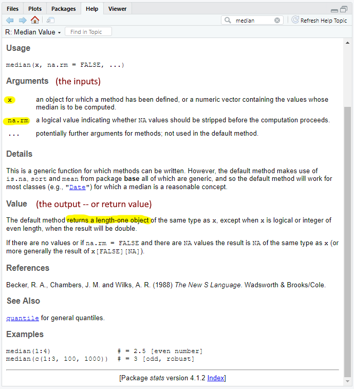
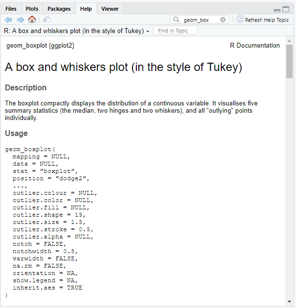

Multiple Conditions
Functions 2
If you have any questions about the material in this lesson or your Class Project feel free to email them to the instructor here.
The script for this lesson is here (right-click, Save link as)
The data for this lesson is here (left-click)
The are many times in programming where you want to repeat the same, or very similar, code. We have seen this done in previous lessons, using for loops to perform the same commands on multiple values in a vector (e.g., finding which values in a temperature column are less than 50). But, for loops are limited to one place within one script.
We want to create code that can be be used multiple times across multiple scripts. For instance, we might want to repeat a conversion on various values across columns from multiple dataframes. Function are self-contained codeblocks that can be called from any script.
There are many functions built into R and far more in the many packages in R. You can also create your own functions. We are going to start with some statistical functions built into R.
R was designed as a programming language for statistics so it is no surprise that R has a lot of statistical function. We will look at the most basic functions: mean(), max(), median(), min(), and sd()
All of these functions:
1) Take a vector of numeric values as input. Note: these functions can take one value (i.e., a vector of 1) as input, but the results would be boring.
2) Apply some operations to these values -- these operations are done behind-the-scenes
3) Return the answer
Let's use four of R's statistical functions on the precipitation column in weatherData:
weatherData = read.csv(file="data/twoWeekWeatherData3.csv",
sep=",",
header=TRUE,
stringsAsFactors = FALSE);
precip = weatherData$precipitation;
precipMean = mean(precipitation);
precipMax = max(precipitation);
precipMed = median(precipitation);
precipVar = sd(precipitation);
The results of these function calls in the Environment:
precipMax: 1.13
precipMean: 0.2617
precipMed 0.025
precipSD 0.4018
All functions, whether user-created or built-in to R, have the same main components: name, argument, and return value.
The components of a function, using median() as an example:

The median() function in the Help tab --with 2 arguments and a return value
Functions, like variables, are named component of a script that stores information. The difference is that variables store values whereas functions store codeblocks.
The parentheses after the name indicate the component is a function as opposed to a variable:
Most of the time when you call a function, including the ones above, an argument is needed inside the parentheses.
This is not universally true, for instance c() is often used without an argument -- c() initializes a vector without any values:
vec1 = c(); # a vector that initially has no values (an empty vector)
vec2 = c(5,2,9,1); # a vector with four values
If we look at median() in the Help tab (fig ##), we can see there are two arguments: x and na.rm
median(x, na.rm = FALSE, ...)
This means that x and na.rm are variables used by the function that can be set by the caller.
x is the generic name for inputted values used by many functions in R -- not to be confused with the x-axis.
na.rm tells the function what to do if there are NA, or unknown, values in the input
na.rm already has a value assigned (FALSE). FALSE is the default value -- which is the value assigned if the caller does not supply a value.
In the Help section (fig. ##), the Value is the same as the return value (or output). In this case, median() returns a "length-one object". In other words, median() returns the median of the vector, which is a length-one object (i.e., one value).
note: if na.rm is FALSE and there are NA values, then the median will also be NA -- you cannot solve for a median of a vector with unknown values
Functions are designed to be independent of any script file. From the script's perspective, a function requires inputs (arguments) and provides outputs (return values) -- everything else about the function, including the code inside, is unknown to the script.
The reverse is also true, from the function's perspective, the calling script provides inputs (arguments) and saves an output (return value) -- everything else about the calling script is (supposed to be) unknown to the function.
Extension: functions, in R, are not as independent as they should be
We are going to create a simple function that converts a vector of Fahrenheit temperatures into Celsius temperatures.
The formula for this is:
Before we create the function, let's look at some examples of conversion calculations:
# single value conversions:
F1 = 50; C1 = (5/9)*(F1 - 32);
F2 = 212; C2 = (5/9)*(F2 - 32);
# multiple value conversion:
F3 = c(0,50,100,150); # has 4 values
C3 = (5/9)*(F3 - 32);
F4 = seq(from=100, to=10, by=-10); # has 10 values
C4 = (5/9)*(F4 - 32);
# convert column from data frame
F5 = weatherData$highTemp;
C5 = (5/9)*(F5 - 32); # has 14 values
F6 = weatherData$lowTemp;
C6 = (5/9)*(F6 - 32); # has 14 values
# the 2 lines above can be combined: C6 = (5/9)*(weatherData$lowTemp - 32);
R will perform mathematical operation across all values in a vector -- and return an answer for each value. R treats single values (e.g., F1 and F2) as vectors with one value:
C1: 10
C2: 100
C3: num [1:4] -17.8 10 37.8 65.6
C4: num [1:10] 37.8 32.2 26.7 ...
C5: num [1:14] 13.89 10 12.22 ...
C6: num [1:14 7.22 6.11 7.78 ...
Most functions have: a name, arguments, a codeblock, and a return value.
For the function below:
# function to convert Fahrenheit temperatures to Celsius
convertFtoC = function(fTemp) # argument: values given by the caller to convert
{
celTemp = (5/9) * (fTemp - 32); # the argument is used as part of the calculation
return(celTemp); # the results of the calculation are sent back to the caller
}
Conversion function
Extension: Using for loops in the conversion function
We can test the function with some of the same values as before:
C2b = convertFtoC(fTemp=F2);
C4b = convertFtoC(fTemp=F4);
C6b = convertFtoC(fTemp=F6);
In the Environment we get the same answers as before:
C2b: 100
C4b: num [1:10] 37.8 32.2 26.7 ...
C6b: num [1:14 7.22 6.11 7.78 ...
You do not have to use the argument names -- if a function only has one argument, it is generally OK to skip the name:
C2c = convertFtoC(F2);
C4c = convertFtoC(F4);
C6c = convertFtoC(F6);
The function convertFtoC() requires an fTemp value.
If the caller does not supply an fTemp value, then they will get the error argument "fTemp" is missing, with no default.
To see this error, type the following into the Console:
> convertFtoC()
Error in convertFtoC() : argument "fTemp" is missing, with no default
We are going to create a second function that takes two numbers (e.g., two arguments) and figures out if the first number is divisible by the second (sent as the return value).
%% is called the modulus operator, often shortened to mod. mod divides the second number from the first but gives only the remainder as the answer.
Let do some example of mod in the Console:
> 8 %% 3
[1] 2
> 9 %% 3
[1] 0
> 10 %% 3
[1] 1
> 10 %% 4
[1] 2
Modulus is used when you are working with values that repeat regularly -- or when you want the nth values. For instance, you might want the first value of every week from a year's worth of temperatures. So, in this case you are moding the index (1-366) by 7, or dividing by 7 and giving the remainder. By doing this, every 7th value is the same (0,1,2,3,4,5,6,0,1,2,3,4,5,6,0,1...). So, all 0 values represent Sunday, all 1 values represent Monday...
Name: isDivisible()
Arguments: div1 and div2 (the numbers to check supplied by the caller)
Return Value: a TRUE/FALSE (Boolean) statement
# function to see if the first number is divisible by the second
isDivisible = function(div1, div2) # arguments given by caller
{
remainder = div1 %% div2; # calculating the modulus
if(remainder == 0) # div2 divides div1 evenly (no remainder)
{
return(TRUE);
}
else # div2 does not divide div1 (there is a remainder)
{
return(FALSE);
}
}
note: both if and else have a return value -- it is important to made sure that a return value is always sent.
Extension: forgetting return values
We can call the function with the two arguments and save the return value (i.e., the answer) to a variable:
div12_4 = isDivisible(12,4);
div12_5 = isDivisible(12,5);
div12_4: TRUE
div12_5: FALSE
Or, just call the function in the Console (with or without argument names):
> isDivisible(12,4)
[1] TRUE
> isDivisible(div1=12, div2=5)
[1] FALSE
Let's put a few more calls to isDivisible() in the Console using 21:
> isDivisible(21, 5)
[1] FALSE
> isDivisible(21, 7)
[1] TRUE
> isDivisible(21, 3)
[1] TRUE
> isDivisible(21, 12)
[1] FALSE
Functions, like variables, cannot be used before they are declared (i.e., in the Environment). When you are sourcing code, this means the function definition needs to come before the function call in the script.
If you have this line before the isDivisible() function:
div12_4 = isDivisible(12,4);
and Source your script, you will get the error:
Error in isDivisible(12, 4) : could not find function "isDivisible"
It is good practice to use the argument names when passing values in to a function.
div12_4a = isDivisible(div1=12, div2=4);
div12_5a = isDivisible(div1=12, div2=5);
If you use argument names then it does not matter the order of the arguments:
div12_4b = isDivisible(div2=4, div1=12);
div12_5b = isDivisible(div2=5, div1=12);
div12_4a: TRUE
div12_4b: TRUE
div12_5a: FALSE
div12_5b: FALSE
Using argument names is all but required when dealing with large functions that have lots of arguments (e.g., plotting functions):

A function with a decent number of arguments
Variable and function names are generally chosen to make it easier for the reader to understand the script. But R could care less what names you use. The following script executes the exact same calculation and returns the exact same TRUE/FALSE values as isDivisible() -- it just uses variable and function names that are not intuitive to the user. Do not do this in your script!
# the same function to see if the first number is divisible by the second
doSomething = function(aValue, anotherValue)
{
theSomething = aValue %% anotherValue;
if(theSomething == 0)
{
return(TRUE);
}
else
{
return(FALSE);
}
}
If you have any questions regarding this application or your Class Project, feel free to email them to the instructor here.
For all functions, make sure you have code in your script that uses the function!
1) Use the R Base function sort() to sort all of the values in the precipNA column.
Create two sorted vectors:
2) Find the median of precipNA from the data frame downloaded for this lesson -- note that there is an NA value in the vector. Looking at the median function in the Help tab, how would you change this so that median ignores the NA values?
3) Create a function named remainder() that returns the remainder of div1 %% div2 instead of a TRUE/FALSE value
4) Create a function that converts temperatures from Celsius to Fahrenheit.
The conversion is:
5) Create a function that takes a number from 0 to 100 and returns a grade from A to F. Return an error if the number is less than 0 and return a different error if the number is greater than 100.
Save you script file as app1-13.r in the scripts folder of your RStudio Project for the class.
Instructions for zipping the Project Folder are here.
Answer the following in comments inside your application script:
The following example functionally does the same thing as Fig.## except with a for(). While it takes more code to do it this way, it also more robust because it gives more access to each value within the vector. With this access you do things like checking for invalid values.
convertFtoC2 = function(fTemp)
{
celTemp = c(); # create a vector for the Celsius values
for(i in 1:length(fTemp)) # go through each value in fTemp vector
{
# convert the indexed fTemp -- save to the celTemp vector
celTemp[i] = (5/9) * (fTemp[i] - 32);
}
return(celTemp); # return the celsius temp vector to the caller
}
# Test the conversion function that uses for loops
C2d = convertFtoC2(fTemp=F2);
C4d = convertFtoC2(fTemp=F4);
C6d = convertFtoC2(fTemp=F6);
In R, the script outside a function will know nothing about the function inside so this code will cause an error:
a = function(b)
{
c = b+1;
d = c *10;
return(d)
}
cat(c); # this line will cause an error
The error occurs because the script cannot see inside the function -- the function exists in its own Environment. So, c cannot be see in the script outside the function.
However, in R, a function can see the Environment of the script so this code will work:
a = function(b)
{
c = b+1; # in most programming languages this is an error
d = c *10;
return(d)
}
c = 10;
a(b=5);
The function should be independent of the script so c should be unknown to the function because c is declared outside of the function. In most programming languages, this would be an error but not in R. Even though it works, it is really bad programming practice. Functions should always be independent of the outside script.
It is important to make sure that a function always returns a values. In most programming languages, if you do not have a return value, the function will return NULL. In R, the function will return the results of the last command executed -- and this can produce confusing results.